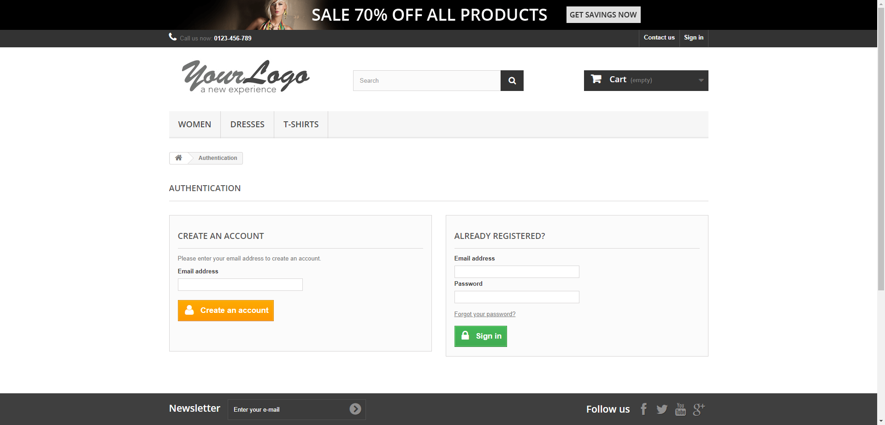

Started
Jan 6, 2021 01:02:26 PM
Ended
Jan 6, 2021 01:04:26 PM
Features Passed
0
Features Failed
2
Features
Scenarios
Steps
Timeline
System/Environment
| Name | Value |
|---|---|
| AppName | AutomationPractice |
| user | Dinesh |
| build | 1.1 |
| os | Windows |
-
Login Page feature
13:02:27 PM / 00:00:58:088 Fail
Login Page feature
01.06.2021 13:02:27 01.06.2021 13:03:25 00:00:58:088 · #test-id=1PassLogin Page titleGiven user is on the login pageWhen user gets the title of the pageThen page title should be "Login - My Store"FailForget password linkGiven user is on the login pageThen forget your password link should be visibleAppHooks.AppsHooks.teardown(io.cucumber.java.Scenario)_F_o_r_g_e_t_ _p_a_s_s_w_o_r_d_ _l_i_n_k_FailLogin with correct credentialsGiven user is on the login pageWhen user enters the username "dec2020secondbatch@gmail.com"Step skippedAnd user enters the password "Selenium@12345"Step skippedAnd user clicks on the login buttonStep skippedThen user gets the title of the pageStep skippedAnd page title should be "My account - My Store"Step skippedAppHooks.AppsHooks.teardown(io.cucumber.java.Scenario) -
Account feature page
13:03:25 PM / 00:01:00:631 Fail
Account feature page
01.06.2021 13:03:25 01.06.2021 13:04:26 00:01:00:631 · #test-id=28FailAccount page titleGiven user is already logged into the applicationusername password dec2020secondbatch@gmail.com Selenium@12345 Given user is on the accounts pageStep skippedWhen user gets the title of the pageStep skippedThen page title should be "My account - My Store"Step skippedAppHooks.AppsHooks.teardown(io.cucumber.java.Scenario)PassAccount section countGiven user is already logged into the applicationusername password dec2020secondbatch@gmail.com Selenium@12345 Given user is on the accounts pageThen user gets account selectionORDER HISTORY AND DETAILS MY CREDIT SLIPS MY ADDRESSES MY WISHLISTS MY PERSONAL INFORMATION Home And Account should count be 6
-
org.openqa.selenium.WebDriverException
1 tests
org.openqa.selenium.WebDriverException
1 failedStatus Timestamp TestName Fail 13:03:17 PM Given user is on the login page Login Page feature.Login with correct credentials.Given user is on the login pageFail 13:03:18 PM AppHooks.AppsHooks.teardown(io.cucumber.java.Scenario) Login Page feature.Login with correct credentials.AppHooks.AppsHooks.teardown(io.cucumber.java.Scenario)Fail 13:03:38 PM Given user is already logged into the application Account feature page.Account page title.Given user is already logged into the applicationFail 13:03:44 PM AppHooks.AppsHooks.teardown(io.cucumber.java.Scenario) Account feature page.Account page title.AppHooks.AppsHooks.teardown(io.cucumber.java.Scenario) -
org.openqa.selenium.NoSuchElementException
1 tests
org.openqa.selenium.NoSuchElementException
1 failedStatus Timestamp TestName Fail 13:03:05 PM Then forget your password link should be visible Login Page feature.Forget password link.Then forget your password link should be visible